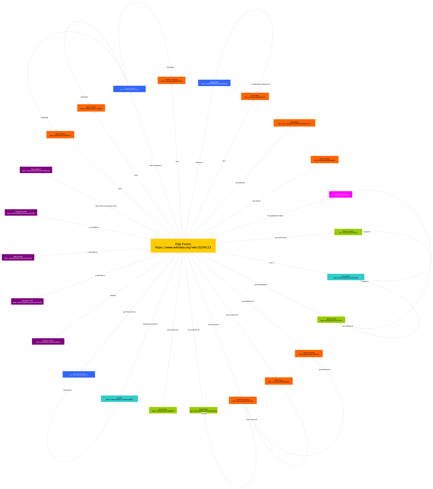
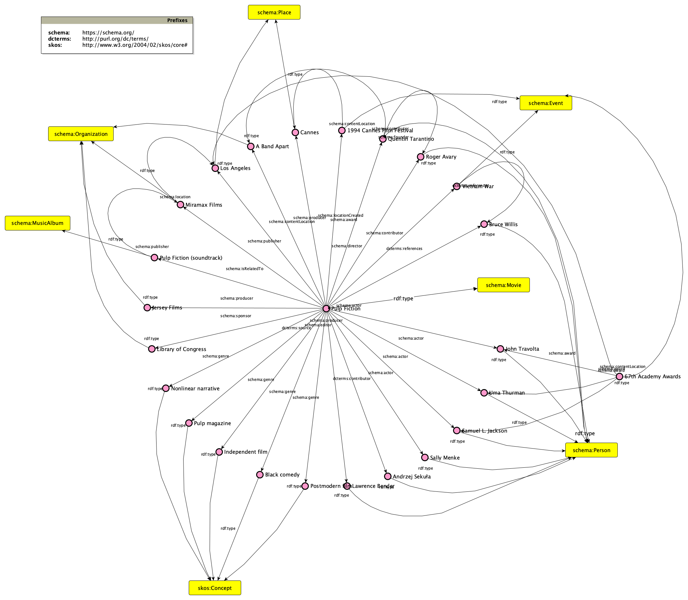
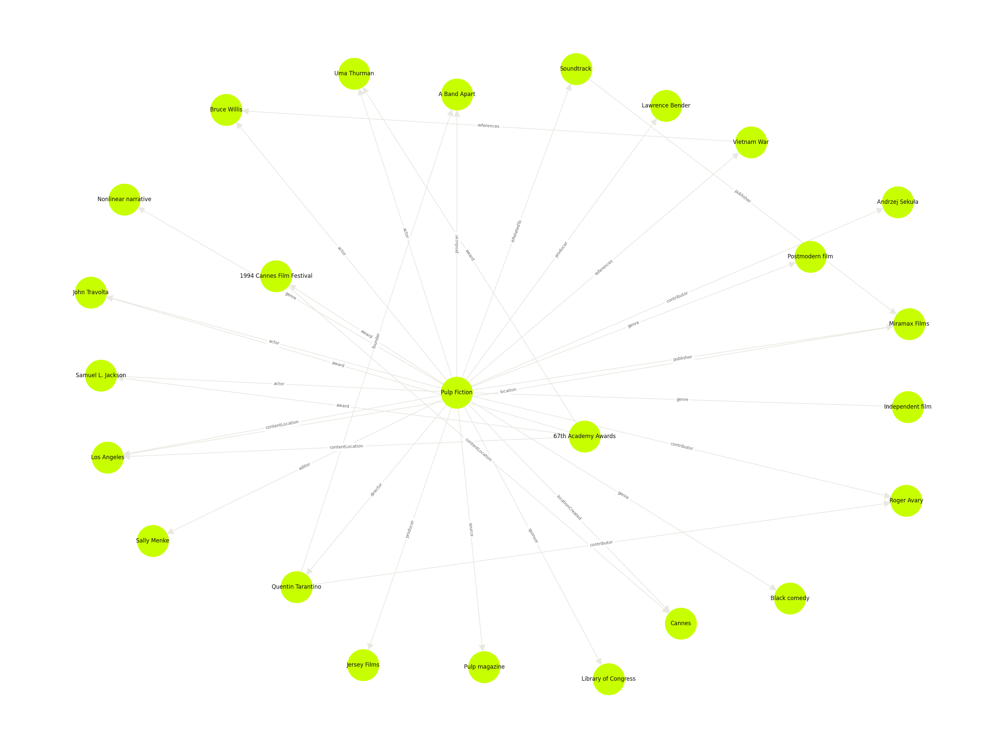

A knowledge organization project documenting the full pipeline from a Wikipedia source to structured linked data.
The project takes the English Wikipedia article on Pulp Fiction (1994) as its primary source. The objective was to extract structured knowledge from that text: identify and classify named entities, produce formal models of their relations, encode the article in XML/TEI, and derive a machine-readable RDF dataset from the encoding.
The choice of subject was not purely methodological. Pulp Fiction is one of my favourite films — I first watched it as a teenager. It also happens to be a suitable subject for this kind of work: the article is rich in interconnected entities — persons, places, organizations, events, and bibliographic resources — whose relations can be expressed precisely using existing ontology vocabularies.
The work is organized into three successive stages: domain study and entity identification, knowledge modeling and ontology mapping, and knowledge representation in standard formats. The outputs of each stage are documented and made available on this site.
I identified nineteen named entities in the Wikipedia article across six categories: persons, places, organizations, events, concepts, and bibliographic resources. Each one was reconciled to at least one external authority file — Wikidata, VIAF, or LCSH — providing stable, resolvable identifiers for subsequent modeling and encoding.
| Entity | Type | Role / note | Authority |
|---|---|---|---|
| Quentin Tarantino | Person | Director, screenwriter | VIAF 37054403 |
| Roger Avary | Person | Co-writer of story | VIAF 85099020 |
| John Travolta | Person | Actor (Vincent Vega) | VIAF 117713609 |
| Uma Thurman | Person | Actor (Mia Wallace) | VIAF 14970417 |
| Samuel L. Jackson | Person | Actor (Jules Winnfield) | VIAF 84357496 |
| Bruce Willis | Person | Actor (Butch Coolidge) | VIAF 85362156 |
| Lawrence Bender | Person | Producer | VIAF 1066569 |
| Sally Menke | Person | Film editor | VIAF |
| Andrzej Sekuła | Person | Cinematographer | VIAF 69138003 |
| Los Angeles | Place | Setting of the film | Wikidata Q65 |
| Cannes | Place | Where the film premiered | Wikidata Q39984 |
| Miramax Films | Organization | Distributor / financier | VIAF 131570070 |
| A Band Apart | Organization | Production company (Tarantino's) | Wikidata Q300323 |
| Jersey Films | Organization | Production company | VIAF 153908908 |
| Library of Congress | Organization | Selected film for National Film Registry | VIAF 151962300 |
| 1994 Cannes Film Festival | Event | Won Palme d'Or | Wikidata Q645890 |
| 67th Academy Awards | Event | 7 nominations, 1 win | Wikidata Q208768 |
| Vietnam War | Event | Referenced in the backstory | Wikidata Q8740 |
| Pulp Fiction Soundtrack | Bibliographic | Music album released alongside the film | Wikidata Q1607955 |
The identified entities and their relations were formalized through two successive models. The theoretical model establishes the conceptual structure in natural language; the conceptual model maps that structure to standard ontology vocabularies.
A mind map representing the relations between all identified entities and the film, expressed in natural language. Each node is annotated with its corresponding authority identifier (VIAF or Wikidata).

Theoretical model — entities and relations with VIAF / Wikidata identifiers
The relations established in the theoretical model are formalized using existing ontology vocabularies — Schema.org, Dublin Core Terms, and SKOS. The diagram follows the Graffoo notation for ontology representation.

Conceptual model — ontology mappings using Schema.org, DCTerms, and SKOS
The conceptual model was used as the basis for three concrete knowledge representations: an XML/TEI encoding of the article text, an HTML rendering derived from it, and an RDF dataset expressing all entities and relations as linked data.
The Wikipedia article encoded according to the Text Encoding Initiative
standard. Named entities are marked up inline using
<persName>,
<placeName>,
<orgName>,
and related TEI elements. The TEI header declares all entities with their
authority identifiers.
An XSLT stylesheet transforms the TEI document into a readable HTML rendering. Each entity type is highlighted in a distinct color, making the annotation layer directly visible in the text.
View HTML rendering →A Python script parses the TEI header and generates RDF triples for every entity and relation declared in the document. The dataset is serialized as Turtle using Schema.org and Dublin Core Terms as primary vocabularies; all entity URIs resolve to Wikidata or VIAF.
Download Turtle file →The RDF dataset rendered as a network graph using rdflib, networkx, and matplotlib. Nodes represent entities; edges represent predicates. The visualization provides a structural overview of the dataset.
View full image →
Knowledge graph — RDF entities and relations rendered from pulp_fiction.ttl
All source files and output artifacts produced in the course of the project.